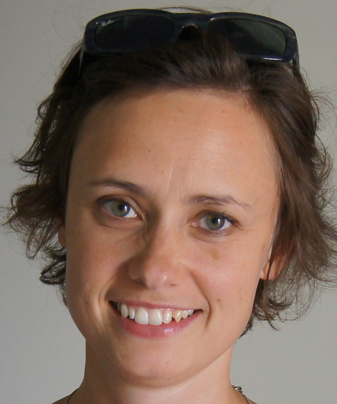

Born January 10, 1980, Copenhagen, Denmark (daughter of Anders Lennart Dalsgaard and Valerie Irene Davey Dalsgaard). Married to Kasper Verdich Lund on July 10, 2004.
| 2008 - | Child nutrition specialist at Arla Foods where I am responsible for developing scientific marketing material to health care professionals along with consumer material and training material for our teams around the world. The focus of the material is infant and maternal nutrition. Being a nutrition specialist, I also give input to product development and I approve packaging designs according to Arla and WHO guidelines. I work with a number of consultants around the world and the marketing material we produce is widely used in the Dominican Republic, Bangladesh, and China. I also teach and arrange internal training for our marketing and sales departments. |
| 2008 - 2008 | Project employee at Arla Foods where I spent 5 months setting up a web site with nutritional contents for our two main brands, Milex and Dano. The web site focuses on infant and maternal nutrition and development and during the summer of 2008, I was responsible for and succesfully managed the six employeed students that helped develop the content for the website. |
| 2007 - 2008 | Teacher at Randers Statsskole and Randers HF, where I taught chemistry at college level. I also sorted, cataloged, and upgraded the chemicals at the school and I took charge of setting up a system for keeping track of the chemicals, thus ensuring safe keeping and timely ordering of needed chemicals. |
| 2004 - 2006 | Member of the bio-modelling research group at the University of Aarhus, where I participated in group meetings, study groups, and conferences. I also helped and guided bachelor students by providing constructive criticism of their work and by introducing them to the many advanced computer programs, we used in our daily work. |
| 1999 - 2000 | Full-time personal assistant for a young handicapped person. My work consisted of personal care, accompanying the patient to school and social activities, as well as night-time supervision and attending to the patient's medical ventilator. |
| 1998 - 1999 | Full-time health care assistent at King's College Hospital in London, where I was a key member of the ward team responsible for patient care as well as administrative duties including data management. While working at the hospital, I completed an extended first aid and manual handling course. |
| 2005 - 2006 | M.Sc. in medical chemistry from the University of Aarhus. My master's thesis, "Molecular Modelling of EF-Tu", relates to rational drug design of antibiotics targeting the EF-Tu protein, which plays an essential role in the synthesis of proteins. The work involves de novo design using Cerius2, rigid-protein and induced fit dockings using Maestro, and simulations of molecular dynamics using NAMD. To evaluate the real-world relevance of the designed ligands and fitness computations, I collaborated with the protein crystallography and synthetic organic chemistry groups at the University of Aarhus. |
| 2000 - 2005 | B.Sc. in medical chemistry from the University of Aarhus, where I wrote my bachelor's thesis, "The Estrogen Receptor", under the supervision of Birgit Schiøtt. In my thesis, I examined the effects estrogen-like molecules can have on the estrogen receptors using computer-aided docking simulations. In particular, I screened a set of pesticides to determine if any of them have effects on either of the estrogen receptors. The thesis shows that computer-aided docking simulations is a promising novel way of determining the effect different compounds can have on receptors in the human body. I succeeded in reproducing the established results for the known ligands and found that pesticides may effect the estrogen receptor. The successful reproduction of the results for the known ligands gives hope to the future of this kind of research, because it creates new ways of testing compounds before sending them on the market. |
| 2000 - 2000 | Supplemental courses in mathematics, physics, and chemistry from the Engineering College of Aarhus. |
| 1995 - 1998 | Mathematical student from the High School of Holstebro. |